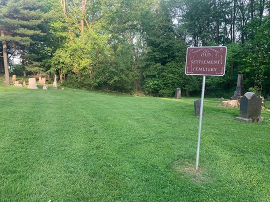
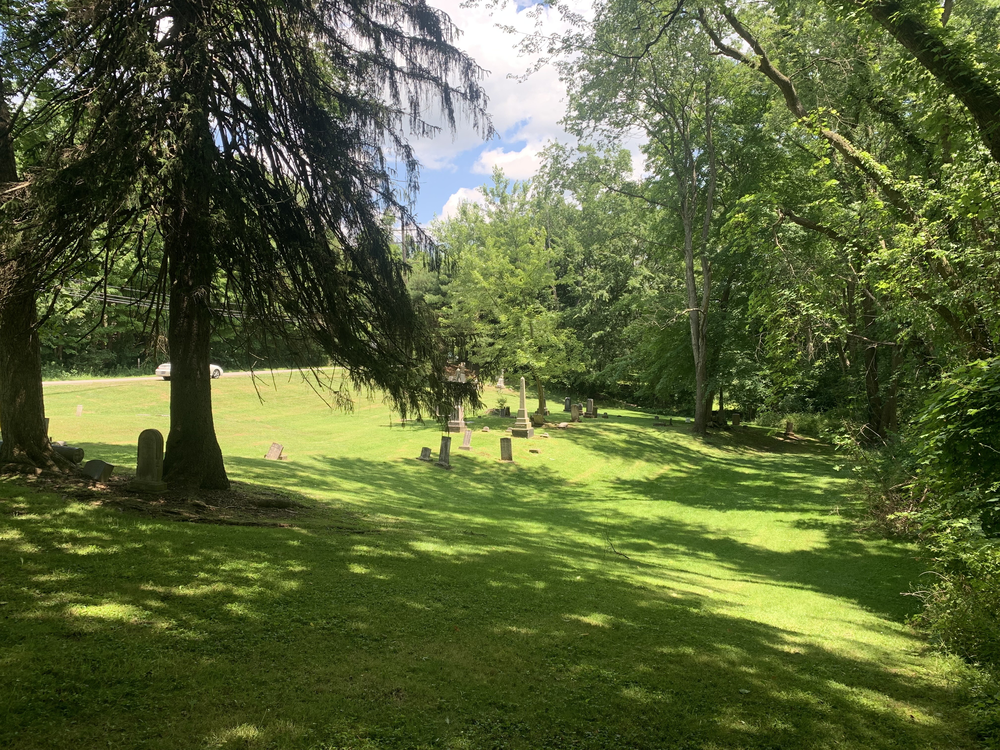
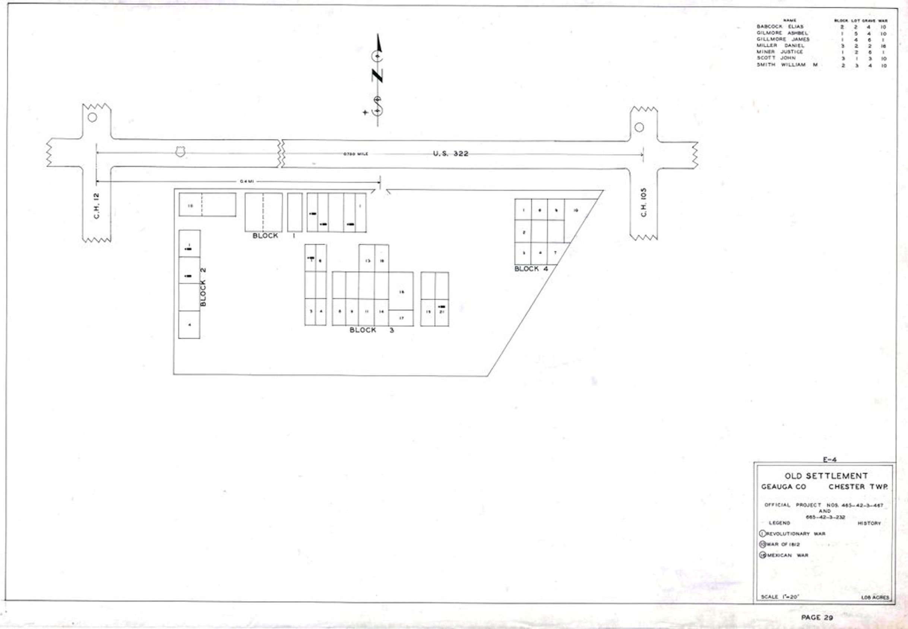
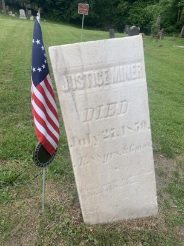
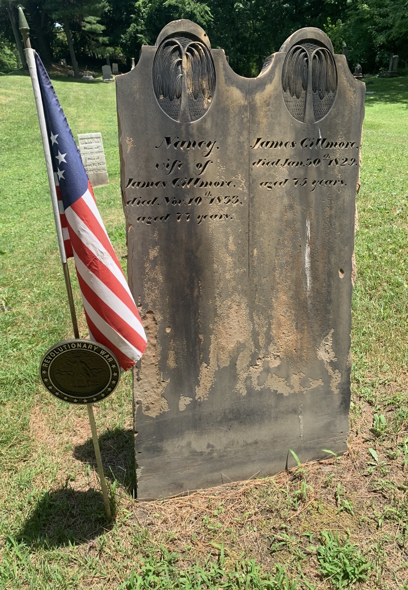

For your safety: Old Settlement Cemetery is located directly on Route 322 with no parking or safe pull‑off area. Please enjoy this virtual tour instead of attempting to stop along the roadway.
Old Settlement Cemetery is the oldest burial ground in Chesterland, with its first burial recorded in 1804. The land was originally part of the homestead of Justice Miner, Chesterland’s Founding Father, who settled here in 1801 on Lots 29 and 30 of the Connecticut Western Reserve.
This hillside cemetery preserves the earliest chapter of the township’s history and is the resting place of three Revolutionary War patriots whose lives shaped the beginnings of our community.



Old Settlement Cemetery is home to three Revolutionary War Patriots honored on the Chesterland Patriot Trail:

Founding Father of Chesterland • Revolutionary War soldier stationed at West Point. Justice Miner settled this land in 1801, building the first cabin in what would become Chester Township.
Read Full BiographyBrother of Justice Miner • Private in the 6th & 7th Connecticut Regiments. Dr. Miner died tragically in the 1804 wind‑fall and was reinterred here when the Chillicothe Road was laid out. His grave is unmarked, but the Chester Grave Hunters are working to secure a government‑issued headstone.
Read Full Biography
Private, Massachusetts Militia • Early settler of Chester Township. Gillmore’s family arrived in 1812 after a months‑long wagon journey and helped establish the early civic life of the township.
Read Full BiographyOld Settlement Cemetery stands as a quiet witness to the earliest days of Chesterland. Though access is limited today, the stories of Justice Miner, Dr. John Miner, and James Gillmore remain central to the founding of our community. Thank you for taking this virtual tour and honoring the patriots who shaped our history.